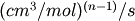

6. The rmg.kinetics Module¶
Provides classes for working with the kinetics of chemical reactions:
- Kinetics - A base class from which kinetics classes are derived
- ArrheniusKinetics - A representation of an Arrhenius kinetic model
- ArrheniusEPKinetics - A representation of an Arrhenius kinetic model with Evans-Polanyi correction
6.1. Classes in rmg.kinetics¶
6.1.1. Kinetics¶
- class rmg.kinetics.Kinetics(Trange=None, rank=0, comment='')¶
Represent a set of kinetic data. The details of the form of the kinetic data are left to a derived class. The attributes are:
Attribute Description Trange A list of the minimum and maximum valid temperatures in K rank An integer rank denoting the degree of confidence in the data (1 = high, 5 = low, 0 = none) comment Comments, including but not limited to the source of the data numReactants The number of reactants (used to determine the units of the kinetics) - isTemperatureInRange(T)¶
- Return True if temperature T is within the valid temperature range specified by self.Trange and False if not. If no temperature range is specified in self.Trange, the kinetic data is assumed to be valid at all temperatures.
6.1.2. ArrheniusKinetics¶
- class rmg.kinetics.ArrheniusKinetics(A=0.0, Ea=0.0, n=0.0)¶
Represent a set of modified Arrhenius kinetics. The kinetic expression has the form

The attributes are:
Attribute Description A The preexponential factor in s^-1, m^3/mol*s, etc. n The temperature exponent Ea The activation energy in J/mol - getRateConstant(T)¶
- Return the rate constant k(T) at temperature T by evaluating the Arrhenius expression.
- getReverse(dHrxn, Keq, T)¶
- Generate the reverse of the current kinetics for a reaction with standard enthalpy of reaction dHrxn and equilibrium constant Keq at 298 K, respectively, defined in the same direction that these kinetics are.
- toXML(dom, root, numReactants)¶
- Generate the XML for these kinetics using the xml.dom.minidom package. The dom and root parameters refer to the DOM and the point within the DOM to place this item.
6.1.3. ArrheniusEPKinetics¶
- class rmg.kinetics.ArrheniusEPKinetics(A=0.0, E0=0.0, n=0.0, alpha=0.0)¶
Represent a set of modified Arrhenius kinetics with Evans-Polanyi data. The kinetic expression has the form

The attributes are:
Attribute Description A The preexponential factor in s^-1, m^3/mol*s, etc. n The temperature exponent E0 The activation energy at zero enthalpy of reaction in J/mol alpha The linear dependence of activation energy on enthalpy of reaction - fromDatabase(data, comment, numReactants)¶
Process a list of numbers data and associated description comment generated while reading from a kinetics database. The numReactants parameter is used to interpret the units of the preexponential.
Database units for A are assumed to be  where
 is numReactants
Database units for E0 are kcal/mol.
is numReactants
Database units for E0 are kcal/mol.
- getActivationEnergy(dHrxn)¶
- Return the activation energy using the enthalpy of reaction dHrxn.
- getArrhenius(dHrxn)¶
- Return the Arrhenius form of k(T) at temperature T by correcting E0 to Ea using the enthalpy of reaction dHrxn.
- getRateConstant(T, dHrxn)¶
- Return the rate constant k(T) at temperature T by evaluating the Arrhenius expression. The reaction has an enthalpy of reaction dHrxn.
- toXML(dom, root)¶
- Generate the XML for these kinetics using the xml.dom.minidom package. The dom and root parameters refer to the DOM and the point within the DOM to place this item.